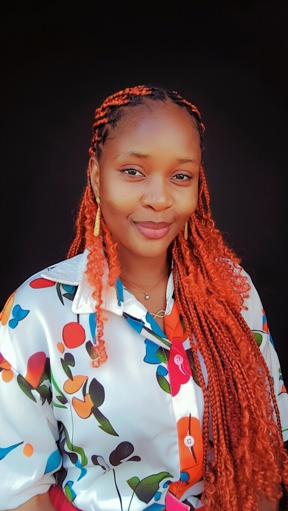

Welcome To My Profile

Hi, my name is Nwagbara Blessing Chiamaka,a registered nurse and mother of two. I am currently a student at ENSG currently learning full-stack web development at Turing Tech LLC.
Everything You Need To Know About Blessing.
I am a passionate learner who is constantly growing both personally and professionally. I have a strong interest in technology, especially web development and I enjoy understanding how websites work from the inside out. I believe in progress, faith, and celebrating every milestone, because each step forward is a testimony of growth and determination. I am committed to becoming better every single day.
Beyond my professional interests, I am family-oriented and deeply value relationships. I cherish meaningful connections and appreciate the people who support and encourage me. My journey is guided by gratitude, resilience, and a desire to make a positive impact wherever I find myself. I believe that with faith and consistency, anything is possible.
Here are some personal facts about me:
- I am currently learning and improving my web development skills.
- I value faith and gratitude as core parts of my life.
- I enjoy celebrating growth, milestones, and answered prayers.
My Education
| School Name | Year Of Graduation | Qualifications |
|---|---|---|
| Obute Memorial School | Jun 2010 | First Leaving Certificate |
| Chonoby Junior Secondary School | Apr 2014 | Junior WAEC Certification |
| Starlight Senior Certificate | Jul 2019 | West Africa Examination Certificate |
| School Of Nursing ESUTH | Nov 2023 | Diploma Of Nursing |
| Turing Tech LLC | Jan 2027 | Full-Stack Web Development |
My Hobbies
In my free/leisure time, I enjoy activities that help me grow, relax. My hobbies keep me productive and inspired while allowing me explore new ideas and skills.
- Reading Books
- Learning & Practicing coding(web development)
- Watching educational contents/videos
- Listening to music
- Spending quality time with family